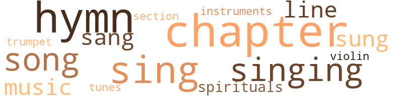
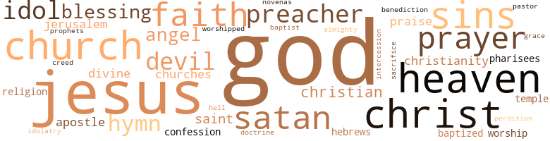

What's Wrong with Lottery, by Bernard, Ruth (1943)
51 music-related terms matched in this text.
Most frequent terms in this topic: sing (7); hymn (5); singing (5); Chapter (5); song (5)
chapter.n.01
Definition: a subdivision of a written work; usually numbered and titled
| word | sentence |
|---|---|
| Chapter | Take your Bible ( do n't be ashamed of it ) , turn to Luke 4th Chapter and Fourth Verse . |
| Chapter | Turn to Hebrews 11th Chapter and Eleventh Verse and strengthen your faith . |
| Chapter | Turn to Matthew 24th Chapter and 44th Verse . |
| Chapter | Chapter I DIVINE APPROVAL " This is my beloved Son , in whom I am well pleased " - Matt . |
| chapter | Many sitting in church have pencils and paper ready as soon as the preacher gives out the number of the chapter and verse from which he is going to preach or choir leader gives out number of hymn to be sung , jots these numbers down and play them Monday . |
| chapter | The Prophet , Isaiah , tells us in 41st chapter , 13th verse that God says " I will help Thee " , also when Israel looked to Egypt for help in the 31st chapter , 3rd verse ; " When the Lord stretch out his hand both he that helpth shall fall , and he that is helpen shall fall down , and they all shall fall together . " |
| chapter | The Prophet , Isaiah , tells us in 41st chapter , 13th verse that God says " I will help Thee " , also when Israel looked to Egypt for help in the 31st chapter , 3rd verse ; " When the Lord stretch out his hand both he that helpth shall fall , and he that is helpen shall fall down , and they all shall fall together . " |
| chapter | You say you have broken only a little piece of the law , what does James say in the second chapter , tenth and eleventh verses : " For whosoever shall keep the whole law , and yet offend in one point , he is guilty of all . |
| Chapter | Right : Will you read the next verse of Romans , 10th Chapter , 14th verse . |
| chapters | Copying the numbers of Bible chapters on Sunday in order to play them Monday is keeping the Sabbath most unholy . |
cornet.n.01
Definition: a brass musical instrument with a brilliant tone; has a narrow tube and a flared bell and is played by means of valves
| word | sentence |
|---|---|
| trumpet | The fight is on , The trumpet sound is ringing out , The cry " to arms , " Is heard afar and near , The Lord of Host Is marching on to victory , The triumph of the Right will soon appear . |
hymn.n.01
Definition: a song of praise (to God or to a saint or to a nation)
| word | sentence |
|---|---|
| hymn | The hymn writer says : " I want him to use me I do , do n't you , For service to choose me I do , do n't you , Whatever betides me , I need Him beside me , In mercy to Aid me I do , do n't you ? " |
| hymn | With the hymn writer again : " Jesus is all the world to me My friend in trials sore I go to him for blessing and He gives them o'er and o'er When I am sad to Him I go No other one can cheer me so When I am sad , He makes me glad He 's my friend . " |
| hymn | With the hymn writer : " Let none hear you idly saying There is nothing I can do While the souls of men are dying And the Master calls for you . " |
| hymns | Fourth , get your old hymnal , dust it off , learn another stanza of some of the beautiful hymns you know and sing to yourself as much as you can . |
| hymns | On Sundays and holidays Male Quartettes came and sang Negro spirituals and gospel hymns . |
| hymn | Many sitting in church have pencils and paper ready as soon as the preacher gives out the number of the chapter and verse from which he is going to preach or choir leader gives out number of hymn to be sung , jots these numbers down and play them Monday . |
| hymn | ( Author unknown ) ( An old hymn ) Wrong : God says - " Help yourself . " |
| Hymn | Charles Wesley , that great Hymn writer of days gone by says " All my help from thee I bring . " |
| hymns | Those rich Negro voices singing spirituals and Gospel hymns . |
music.n.01
Definition: an artistic form of auditory communication incorporating instrumental or vocal tones in a structured and continuous manner
| word | sentence |
|---|---|
| music | They can read , cane chairs , make brooms , repair racks , major in music , lecture , teach , preach , announce on the radio , etc . |
| music | When set to music and sung , how restful to the weary . |
musical_instrument.n.01
Definition: any of various devices or contrivances that can be used to produce musical tones or sounds
| word | sentence |
|---|---|
| instruments | Famous mechanics can invest in insurance to cover lost of their instruments and tools . |
section.n.01
Definition: a self-contained part of a larger composition (written or musical)
| word | sentence |
|---|---|
| section | Nobody knows us in that section of the city . " |
sing.v.02
Definition: produce tones with the voice
| word | sentence |
|---|---|
| sing | O great Redeemer , Give us a thousand tongues to sing Thy praise , Help us to witness the glories of our Lord and King , Help us to witness the wonders of His Grace . |
| sing | If we have a song it was given to us for one and an only reason to sing it . |
| sung | When set to music and sung , how restful to the weary . |
| sang | Humble submission , confession , Understanding of wrong Willing to live under your father 's rule You were happy , your heart sang a song . |
| sing | Fourth , get your old hymnal , dust it off , learn another stanza of some of the beautiful hymns you know and sing to yourself as much as you can . |
| singing | " I ca n't understand , " replied Henry , " how you can be always singing ' I 'm Satisfied With Jesus . ' " |
| sing | Mr. Lee noticed that the deep voice could n't sing any more as he worked and that he strained at objects that used to seem like feathers in the once strong arms . |
| sang | On Sundays and holidays Male Quartettes came and sang Negro spirituals and gospel hymns . |
| singing | It smiled and began singing that old song he had heard all of his life , especially when he was just a wee one on her knee : " What a friend we have in Jesus , All our sins and griefs to bear . " |
| sung | Many sitting in church have pencils and paper ready as soon as the preacher gives out the number of the chapter and verse from which he is going to preach or choir leader gives out number of hymn to be sung , jots these numbers down and play them Monday . |
| sing | The fight is on On Christian soldiers , And face to face in stern array With armour gleaming , And colors streaming , The right and wrong engage today The fight is on But be not weary Be strong and in His might hold fast With our God for us , His banner o'er us We 'll sing the victor 's song at last . |
singing.n.01
Definition: the act of singing vocal music
| word | sentence |
|---|---|
| singing | He turned and heard the voices of the male quartette singing : " What can wash away my sins ? |
| singing | Church members singing " Where He leads me I will follow " . |
| singing | Those rich Negro voices singing spirituals and Gospel hymns . |
song.n.01
Definition: a short musical composition with words
| word | sentence |
|---|---|
| song | If we have a song it was given to us for one and an only reason to sing it . |
| song | Humble submission , confession , Understanding of wrong Willing to live under your father 's rule You were happy , your heart sang a song . |
| song | It smiled and began singing that old song he had heard all of his life , especially when he was just a wee one on her knee : " What a friend we have in Jesus , All our sins and griefs to bear . " |
| song | Singing : " Jesus took my burden and left me with a song . " |
| song | The fight is on On Christian soldiers , And face to face in stern array With armour gleaming , And colors streaming , The right and wrong engage today The fight is on But be not weary Be strong and in His might hold fast With our God for us , His banner o'er us We 'll sing the victor 's song at last . |
spiritual.n.01
Definition: a kind of religious song originated by Blacks in the southern United States
| word | sentence |
|---|---|
| spirituals | On Sundays and holidays Male Quartettes came and sang Negro spirituals and gospel hymns . |
| spirituals | Those rich Negro voices singing spirituals and Gospel hymns . |
tune.n.01
Definition: a succession of notes forming a distinctive sequence
| word | sentence |
|---|---|
| line | Are we satisfied to let men , women and children go on gambling and drinking so there will be a line drawn between the good and the bad or the high and low . |
| line | It is an old saying that " Happiness was born a twin " and let us be fully informed that the march into heaven is not a single file line . |
| tunes | ( The one that calls out the numbers announces them long , loudly and mournful in tunes of some of the Negro Baptist preachers . ) |
violin.n.01
Definition: bowed stringed instrument that is the highest member of the violin family; this instrument has four strings and a hollow body and an unfretted fingerboard and is played with a bow
| word | sentence |
|---|---|
| violin | Forgiving our enemies is very , very hard for most of us to do just like playing the violin or walking a tight rope . |
whistle.v.05
Definition: make a whining, ringing, or whistling sound
| word | sentence |
|---|---|
| sing | Henry raised his head and whispered hoarsely , with all his heart , the words of an old meter he had heard his mother sing : " Lord I come to Thee A sinner all defiled , Take the stain of guilt away And own me as Thy child . " |
| sing | I remember when I was a child I heard the old Christians sing : - " Submit to all the ways of God , And walk the narrow happy road . " |
71 violence-related terms matched in this text.
Most frequent terms in this topic: fight (8); hurt (8); hate (7); kill (7); killed (4)
contemn.v.01
Definition: look down on with disdain
| word | sentence |
|---|---|
| scorned | I know of only one that was born in such a low place as a manger or was scorned and abused by his own . |
| scorn | This is a good way to minimize all prejudices ; when looking at one whom you could scorn , think evil of , back bite , feel inferior or superior to , replace the thought with this one : That 's God 's child and He wants me to see good in it . |
covetousness.n.01
Definition: an envious eagerness to possess something
| word | sentence |
|---|---|
| covetousness | , and covetousness , which is idolatry . |
fight.n.05
Definition: a boxing or wrestling match
| word | sentence |
|---|---|
| fight | Result of work , result of a race , result of a fight . |
| fight | Fight the good fight of faith , lay hold on eternal life , whereunto thou art also called , and hast professed a good profession before many witnesses . |
| fight | The fight is on , The trumpet sound is ringing out , The cry " to arms , " Is heard afar and near , The Lord of Host Is marching on to victory , The triumph of the Right will soon appear . |
| fight | The fight is on On Christian soldiers , And face to face in stern array With armour gleaming , And colors streaming , The right and wrong engage today The fight is on But be not weary Be strong and in His might hold fast With our God for us , His banner o'er us We 'll sing the victor 's song at last . |
| fight | The fight is on On Christian soldiers , And face to face in stern array With armour gleaming , And colors streaming , The right and wrong engage today The fight is on But be not weary Be strong and in His might hold fast With our God for us , His banner o'er us We 'll sing the victor 's song at last . |
| Fight | Help us Christian soldiers to fight until the victory is won , Fight until you call us off the battlefield to study war no more . |
fight.v.02
Definition: fight against or resist strongly
| word | sentence |
|---|---|
| fighting | Quarreling and fighting followed . |
| fight | The general gives out the command but the soldiers must fight . |
| fight | Everybody laughed and he got angry , wanted to fight and had to be put out . |
| Fight | Fight the good fight of faith , lay hold on eternal life , whereunto thou art also called , and hast professed a good profession before many witnesses . |
| fought | Let Us Pray Oh Thou man of war , the Lord , God is your name , You have fought many a battle and never lost one . |
| fight | Help us Christian soldiers to fight until the victory is won , Fight until you call us off the battlefield to study war no more . |
harm.v.01
Definition: cause or do harm to
| word | sentence |
|---|---|
| harm | We would n't do anything to hurt or harm in any way . |
hate.v.01
Definition: dislike intensely; feel antipathy or aversion towards
| word | sentence |
|---|---|
| hated | From this we can see that the " lucky persons " hated those children . |
| hated | How our sympathy goes out for those that are hated and killed but on second thought should n't we have some sympathy for the killers . |
| hate | Again I say God does not suffer for men to hate each other first , last or any other time . |
| hates | " Well so says ah , but ah mortally hates to see dem git all raphed up in it . " |
| hates | " Ah hates it too , but lawd chile what can yo do wid dat . |
| hates | " Ah knows I is cause ah ca n't fergit last yeah wen ma Jim got laid off an ma Raymond did n't had no shoes to go to school and oh how ah hates for dat chile to mis his school . |
| hating | If Giving is loving , then Taking is hating . |
| hating | Giving is loving Taking is hating Lottery is taking So Lottery is hating . |
| hating | Giving is loving Taking is hating Lottery is taking So Lottery is hating . |
| hate | I hate robbery for burnt offering . |
| hate | " For I the Lord love judgment , I hate robbery for burnt offering ; and I will direct their work in truth , and I will make an everlasting covenant with them . " |
| hate | We group all of a color together and hate them . |
| hate | Oh , how we hate them . |
| hate | We hate them with the most degrading bitterness when we put Lottery money into their hands . |
| hate | Calling God 's name in connection with Lottery is taking His name in vain , God says law breakers hate him . |
| hates | God hates sin he does not aid it . |
hurt.v.04
Definition: cause damage or affect negatively
| word | sentence |
|---|---|
| hurt | When we make our own laws or interpret God 's laws in our own way or break the commandments we can but hurt our ownselves . |
injury.n.01
Definition: any physical damage to the body caused by violence or accident or fracture etc.
| word | sentence |
|---|---|
| hurt | Spiritually blind are blind to their own hurt . |
| hurt | Spiritually blind are blind to the hurt of their fel-lowmen . |
| harm | The variety gives beauty The variety gives charm It was meant for spice and intensity Never for strife and harm . |
| hurt | Our gain should not be our fellowmen 's hurt . |
| hurt | When money we use is our fellowmen 's hurt or loss then it becomes a curse to us . |
| hurt | It was meant for self protection not for our comfort at the other fellow 's hurt . |
kick_back.v.02
Definition: spring back, as from a forceful thrust
| word | sentence |
|---|---|
| kicking | Disobedient children of God are kicking against a great rock , hurting themselves . |
kill.v.10
Definition: cause the death of, without intention
| word | sentence |
|---|---|
| Kill | " Thou Shalt Not Kill . " |
| killed | How our sympathy goes out for those that are hated and killed but on second thought should n't we have some sympathy for the killers . |
| killed | Did he say ; " Thou shalt not be killed . " |
| killing | Blind to the fact that those who murder are killing themselves . |
| killed | " Henry , I have read in books about gamblers getting so very enthused that they stole to gamble and killed in a brawl . |
| kill | " Oh mister , mister , please , " she called to the men running the game , " my boy has lost money that belonged to his boss and his father will kill him . |
| kill | We should n't rob and kill everybody else , not even in a racket . |
| kill | For that said , Do not commit adultery , said also , Do not kill . |
| kill | Now if thou commit no adultery , yet if thou kill , thou art become a transgressor of the law . " |
| kill | " Thou shalt not kill . " |
| kill | Will the law of our land neglect your punishment because you only steal or kill once a year and deal only with the every day offenders ? |
| kill | Be careful not to kill their ambition by playing Lottery with vendors . |
| killed | He fired twice and killed both . |
knife.n.02
Definition: a weapon with a handle and blade with a sharp point
| word | sentence |
|---|---|
| knife | Be careful not to cut them with that sharp red knife you have in your mouth . |
malice.n.01
Definition: feeling a need to see others suffer
| word | sentence |
|---|---|
| spite | The fact is people know they are blind and provisions are made to teach them in spite of their physical handicaps . |
murder.n.01
Definition: unlawful premeditated killing of a human being by a human being
| word | sentence |
|---|---|
| murder | Blind to the fact that those who murder are killing themselves . |
| murder | No clue to the murder could be found . |
| murder | Nine dollars worth of tears , deprivations , trouble , hunger , nakedness , murder to others and eternal damnation to ourselves . |
musket_ball.n.01
Definition: a solid projectile that is shot by a musket
| word | sentence |
|---|---|
| balls | Girls and boys solicited donations on pots , pans , balls , bats , scarfs and other articles which were their 's after turning in a definite amount of money on each article . |
open_fire.v.01
Definition: start firing a weapon
| word | sentence |
|---|---|
| fired | He fired twice and killed both . |
pain.v.02
Definition: cause emotional anguish or make miserable
| word | sentence |
|---|---|
| hurt | We would n't do anything to hurt or harm in any way . |
| hurt | We could fill books with their very many necessary uses , but , did God give them to us to use to play a game that will hurt , harm , deprive , make trouble , damn our fellowmen ? |
resentment.n.01
Definition: a feeling of deep and bitter anger and ill-will
| word | sentence |
|---|---|
| bitterness | We hate them with the most degrading bitterness when we put Lottery money into their hands . |
shoot.v.02
Definition: kill by firing a missile
| word | sentence |
|---|---|
| shot | The husband shot the brother and skipped town . |
strike.v.04
Definition: make a strategic, offensive, assault against an enemy, opponent, or a target
| word | sentence |
|---|---|
| hit | Saddle means if two of his three comes out he 'll hit forty cents . |
sword.n.01
Definition: a cutting or thrusting weapon that has a long metal blade and a hilt with a hand guard
| word | sentence |
|---|---|
| sword | In the face of hunger , want , peril , sword or even death , then die for Him . |
violence.n.01
Definition: an act of aggression (as one against a person who resists)
| word | sentence |
|---|---|
| violence | He did not violence neither was there any deceit in his mouth so he condemned not sinners but forgave them and bade them go in peace and sin no more . |
wound.n.01
Definition: an injury to living tissue (especially an injury involving a cut or break in the skin)
| word | sentence |
|---|---|
| wound | The wound will leave a bleeding heart . |
wrath.n.01
Definition: intense anger (usually on an epic scale)
| word | sentence |
|---|---|
| wrath | Killers are the ones that have brought unto themselves the wrath of God . |
| wrath | " For the great day of his wrath is come ; and who shall be able to stand ? " |
wrestle.v.01
Definition: combat to overcome an opposing tendency or force
| word | sentence |
|---|---|
| wrestle | For we wrestle not against flesh and blood but against principalities , against powers , against rulers of darkness of this world , against spiritual wickedness in high places . " |
521 religion-related terms matched in this text.
Most frequent terms in this topic: God (207); Jesus (65); Christ (22); sins (19); church (17)
apostle.n.03
Definition: (New Testament) one of the original 12 disciples chosen by Christ to preach his gospel
| word | sentence |
|---|---|
| apostle | One that called himself an apostle was seen turning ail around like a top then slipped into the Lottery Shop quickly . |
| Apostle | The Apostle Paul cautions the Corinthians to bring into captivity every thought to the obedience of Christ . |
| Apostles | The Apostles counted it a great privilege that they were counted worthy to suffer for Him . |
baptist.n.01
Definition: follower of Baptistic doctrines
| word | sentence |
|---|---|
| Baptist | ( The one that calls out the numbers announces them long , loudly and mournful in tunes of some of the Negro Baptist preachers . ) |
baptize.v.01
Definition: administer baptism to
| word | sentence |
|---|---|
| baptized | We told the world when we were baptized that we had put off the old man Adam and had put on the new man Christ . |
| baptized | " Repent and be baptized every one of you in the name of Jesus for the remission of sins and he shall receive the gift of the Holy Ghost . " |
blessing.n.05
Definition: the act of praying for divine protection
| word | sentence |
|---|---|
| blessing | With the hymn writer again : " Jesus is all the world to me My friend in trials sore I go to him for blessing and He gives them o'er and o'er When I am sad to Him I go No other one can cheer me so When I am sad , He makes me glad He 's my friend . " |
| blessing | Our righteousness is right if it uses the right of the babbling brook running to , refreshing and blessing the lives of others . |
| blessing | came every day , close to bed , praying , blessing , administering Holy Communion . |
| benediction | We thank Thee that every heart has received Thy heavenly benediction in Jesus ' name . |
| Blessing | Refuge for the sinners , Blessing for the saints . |
| blessing | Bring ye all the tithes into the storehouse , that there may be meat in mine house , and prove me now herewith , saith the Lord of hosts , if I will not open you the windows of heaven and pour you out a blessing , that there shall not be room enough to receive it . " |
| blessing | Everybody is living and loving and blessing me . |
| blessing | The dead , living , unborn , newly born , all are blessing me . |
| blessings | Stones do n't need blessings . |
| blessings | And what self denial , suffering , what sacrifices are offered to him trying to get his blessings . |
christendom.n.01
Definition: the collective body of Christians throughout the world and history (found predominantly in Europe and the Americas and Australia)
| word | sentence |
|---|---|
| Christianity | Miracles of Idols was the chief cause of Christian persecutions when Christianity was younger . |
| Christianity | How Christlike is our Christianity ? |
| Christianity | Would we remember the 5,000,000 in China , the 15,-000 ,000 in Africa , the 40,000,000 in South America and numbers in other lands that need Christianity and transforming light ? |
christian.n.01
Definition: a religious person who believes Jesus is the Christ and who is a member of a Christian denomination
| word | sentence |
|---|---|
| Christians | Can Christians afford to be indifferent ? |
| Christian | To Calanthe Olivia Walker who in the year 1927 introduced and presented me with Christian Literature , which is quite a ray of living light . |
| Christian | Second - Missions ( Home and Foreign ) - Direct and personal responsibility of each and every Christian . |
| Christians | I remember when I was a child I heard the old Christians sing : - " Submit to all the ways of God , And walk the narrow happy road . " |
| Christians | And we Christians , are n't we jealous of the world 's sound trucks that go through the streets compelling attention . |
church.n.02
Definition: a place for public (especially Christian) worship
| word | sentence |
|---|---|
| church | " I do n't know , but " ---------- " Do n't tell me that Rev. Johnson does n't know that Deacon Ames is a Vendor and many of the church sisters know that he has really served them well when he brings nine dollars for only one pickel . |
| church | " Well , Lucy says that the priest was in tears because Lottery tickets were found in the church at the feet of saints , where petitioners were making novenas for their aid in winning Lottery . |
| church | And , suddenly the face changed to Rev. Johnson 's , then to the Priest , to sisters , nurses , to doctors , a kindly old man from church across the way , each one of the male quartette and the same body suddenly bore another bright shining face . |
| church | Many sitting in church have pencils and paper ready as soon as the preacher gives out the number of the chapter and verse from which he is going to preach or choir leader gives out number of hymn to be sung , jots these numbers down and play them Monday . |
| church | Wrong : One woman goes to church , lights a candle , prays , blesses herself with holy water , then she is sure to hit . |
| church | If church raffles are gambling that does not make Lottery not a gamble and therefore a sin punishable by death . |
| church | Wrong : People that go fishing on Sundays , play Lottery and do other things have better luck than those that live up in the church all the time . |
| church | Wrong : Is n't it true that many have contributed to needy , paid church dues , and church taxes with Lottery money . |
| church | Wrong : Is n't it true that many have contributed to needy , paid church dues , and church taxes with Lottery money . |
| church | Let Us Pray O Lord Our God , We pray for the peace and prosperity of the church , For thy word says , that they who love the church shall prosper . |
| church | This sister was an usher in the church . |
| church | He dismissed the body from the house , but would not receive it into the church . |
| church | After spending Saturday night and a part of Sunday morning at the " Drawing " one tries to go to church for rest . |
church.n.04
Definition: the body of people who attend or belong to a particular local church
| word | sentence |
|---|---|
| Church | ( Favorite text of Dr. J. D. Carroll , Pastor of Coliseum Place Baptist Church . ) |
| churches | I , Jesus have sent mine angel to testify unto you these things in the churches . |
| church | Many of these have the zeal of God and hold high places in our church , even that of the center place in the pulpit . |
| Church | Blood 5-10-40 Water 1 7-11-9 Water 1-2-3 Dead Man 9-19-29 Crying 2-22-28 Church 2-19-33 Wash Woman 4-11-44 Coffin 9-49-50 Drunkenness 13-18-42 Hair 1-16-40 Knife 7-34-47 Priest 5-11-40 Weeping 2-27-23 Fish 7-17-77 Dog 4-17-50 Police 2-5-31 Above are a few of the standard and famous " Gigs " . |
| churches | Wrong : The churches have raffles , Lottery parties , all of that 's gambling . |
| CHURCH | IN DEFENSE OF THE CHURCH 'S ACTIVITIES The Church , imperfect because man is imperfect , is yet a great and glorious institution . |
| Church | IN DEFENSE OF THE CHURCH 'S ACTIVITIES The Church , imperfect because man is imperfect , is yet a great and glorious institution . |
| Church | The Church needed a Sunday School room . |
| church | Our desires are that the church will outlaw raffles . |
| church | The end is good and money used is money put aside by children of God for church activities , but raffles are the cause of so many stumbling . |
| church | Let Us Pray O Lord Our God , We pray for the peace and prosperity of the church , For thy word says , that they who love the church shall prosper . |
| churches | We hope the day will come when the churches will offer courses ( not lecture courses but paper , pencil , blackboard , textbook , drill , examinations and markings courses ) in " Learning to Forgive Our Enemies . " |
confession.n.05
Definition: the document that spells out the belief system of a given church (especially the Reformation churches of the 16th century)
| word | sentence |
|---|---|
| confession | Humble submission , confession , Understanding of wrong Willing to live under your father 's rule You were happy , your heart sang a song . |
| confession | I give thee charge in the sight of God , who quickeneth all things , and before Christ Jesus , who before Pontius Pilate witnessed a good confession ; That thou keep this commandment without spot , unrebukable , until the appearing of our Lord Jesus Christ ; Which in his times he shall shew , who is the blessed and only Potentate , the King of kings , and Lord of lords : Who only hath immortality , dwelling in the light which no man can approach unto ; whom no man hath seen , nor can see : to whom be honour and power everlasting . |
creed.n.01
Definition: any system of principles or beliefs
| word | sentence |
|---|---|
| creed | We do n't let color , race , creed , profession , social standing , money , greed or nothing else keep us from being just , kind and loving to one another . |
curate.n.01
Definition: a person authorized to conduct religious worship
| word | sentence |
|---|---|
| Pastor | ( Favorite text of Dr. J. D. Carroll , Pastor of Coliseum Place Baptist Church . ) |
doctrine.n.01
Definition: a belief (or system of beliefs) accepted as authoritative by some group or school
| word | sentence |
|---|---|
| doctrine | But God he thanked , that ye were the servants of sin , but ye have obeyed from the heart that form of doctrine which was delivered you . |
eden.n.01
Definition: any place of complete bliss and delight and peace
| word | sentence |
|---|---|
| Heaven | Blessed are the poor in spirit for theirs is the kingdom of Heaven . |
| heaven | Their lives tell us that God lives and all is well , that He is rich unto all that call upon Him , that the windows of heaven are still open , and that today is the day of the miracles oj our God . |
| Heaven | You may be just a violet , Dark and little and low , But with Heaven , earth and the Father 's care You are expected to grow . |
| Heaven | Once a blind preacher spoke to his fellowmen : " Heaven will mean more to me than it will to you all . |
| heaven | It is an old saying that " Happiness was born a twin " and let us be fully informed that the march into heaven is not a single file line . |
| heaven | His heaven is making intercession for sinners . |
| Heaven | As we show our report card to the Father checking up on subjects that Jesus taught us we say : " Our Father ; - That means , Lord you are our father up in Heaven and we are down here on earth , we are all brothers , we love one another , we are just as kind as we can be to one another . |
| heaven | We are doing all this because we know it is your will and we want your will to be done in the earth of our bodies as it is done in the heaven of our souls . |
| heaven | Let Us Pray The Lord 's Prayer Our Father which art in heaven , Hallowed , be they name . |
| heaven | Thy will be done in earth as it is in heaven . |
| heavens | For as the heavens are higher than the earth , so are my ways higher than your ways , and my thoughts than your thoughts . " |
| heaven | " If my people , which are called by my name shall humble themselves , and pray , and seek my face , and turn from their wicked ways ; then will I hear from heaven and will forgive their sin and will heal their land . " |
| Heaven | Carried him back to the fold and fed him with righteousness that brought peace to his soul , and looked up to Heaven and said to the angels , " Rejoice with me I have found my sheep . |
| heaven | Instead of losing them , store them in heaven 's bank where the interest is very great . |
| heaven | It smiled and Henry 's heaven burden rolled away . |
| heaven | Henry heard a voice from heaven saying : " Whosoever my son sets free is free indeed . " |
| Heaven | He tells us that God is too slow , that he knows we have to live and that God is n't going to send us any Manna from Heaven and that we had better take the matter in our own hands . |
| Heaven | Right : Yes , it will help you out of Heaven and help you into Hell . |
| Heaven | My help cometh from the Lord who made Heaven and Earth . " |
| heavens | " But the day of the Lord will come as a thief in the night ; in which the heavens shall pass away with a great noise , and the elements shall melt with fervent heat , the earth also and the works that are herein shall be burned up . " |
| heaven | Bring ye all the tithes into the storehouse , that there may be meat in mine house , and prove me now herewith , saith the Lord of hosts , if I will not open you the windows of heaven and pour you out a blessing , that there shall not be room enough to receive it . " |
| Heaven | Do n't waste thought on , or worry about how the windows of Heaven will be opened . |
| Heavens | Be more thankful for clothes than you would be if you were standing out on a desert and a suit dropped down from the Heavens . |
god.n.03
Definition: a man of such superior qualities that he seems like a deity to other people
| word | sentence |
|---|---|
| God | " Honour thy father and thy mother that thy days may be long upon the land which the Lord thy God giveth thee . " |
| God | Killers are the ones that have brought unto themselves the wrath of God . |
| God | What , therefore God has joined together , let not man put asunder . |
| God | Two whom God joined together loved and trusted one another . |
| God | Colos-sians 3 : 5 , " For if God spared not the angels that sinned , but cast them down to hell , and delivered them into chains of darkness , to be reversed unto judgment ; And spared not the old world , but saved Noah the eight person , a preacher of righteousness , bringing in the flood upon the world of the ungodly ; And turning the cities of Sodom and Gomorrah into ashes condemned them an example unto those that after should live ungodly ; " - II Peter 2 : 4-6 . |
| God | " Hurt not the earth , neither the sea , nor the trees , till we have sealed the servants of our God in their foreheads . " |
| God | " What have I to do with Thee , Jesus thou Son of the most high God , I adjure Thee by God that Thou torment me not . " |
| God | Blessed are the pure in heart for they shall see God . |
| God | Cursed are they that regard Lottery in their hearts for they shall not see God 's face . |
| God | Blessed are the peacemakers for they shall be called the children of God . |
| God | They said , " God was in the plan . " |
| God | They said God suffered her the first time because she was in a tight place but did not mean that she should continue . |
| God | Again I say God does not suffer for men to hate each other first , last or any other time . |
| God | The God of Abraham , Isaac and Jacob can and will give us bread and water . |
| God | God does not need him here or on a desert . |
| God | Our God is the same God here as He is on the desert . |
| God | Our God is the same God here as He is on the desert . |
| God | God blesses us by letting us work for Him . |
| God | Daniel 's God never fails . |
| God | One child of God during the very dark days of the depression , went out day after day looking for work and found none . |
| God | Some days he ate and some days he did n't , but thanks be to God in that big city with so many temptations he did n't put forth one effort to get one penny of corrupt money . |
| God | One child of God ran an orphanage with nothing of a capital but prayer . |
| God | Another child of God went out looking for work , came back disappointed , tired , hungry and just sat down . |
| God | Spiritually blind are blind to knowledge of what God requires of us . |
| God | I know God did n't say he was going to make any part of a step to a Gambling House or Lottery Shop . |
| God | Their lives tell us that God lives and all is well , that He is rich unto all that call upon Him , that the windows of heaven are still open , and that today is the day of the miracles oj our God . |
| God | Their lives tell us that God lives and all is well , that He is rich unto all that call upon Him , that the windows of heaven are still open , and that today is the day of the miracles oj our God . |
| God | The Idol will not even give us a chance if we do n't have money to give him , but Our God says : " Ho , everyone that thirsteth come ye to the waters , and he that hath no money come ye , buy , and eat : come with - out money and without price . |
| God | " There was so much injustice and times were so hard some times I could hardly believe that there was a God . " |
| God | Blind to the gift of God . |
| God | " Yes , see did and futhermo she says , ' God knos dis man don wuk rcglar an God knos dat little money ah makes done go far , God knos when ah was sick ah caught some money that heped me out good , God knos you did n't gent me nuthin and God knos ever chance ah gits ah is gwine to put a nickel on some numbahs ' . " |
| God | " Yes , see did and futhermo she says , ' God knos dis man don wuk rcglar an God knos dat little money ah makes done go far , God knos when ah was sick ah caught some money that heped me out good , God knos you did n't gent me nuthin and God knos ever chance ah gits ah is gwine to put a nickel on some numbahs ' . " |
| God | " Yes , see did and futhermo she says , ' God knos dis man don wuk rcglar an God knos dat little money ah makes done go far , God knos when ah was sick ah caught some money that heped me out good , God knos you did n't gent me nuthin and God knos ever chance ah gits ah is gwine to put a nickel on some numbahs ' . " |
| God | " Yes , see did and futhermo she says , ' God knos dis man don wuk rcglar an God knos dat little money ah makes done go far , God knos when ah was sick ah caught some money that heped me out good , God knos you did n't gent me nuthin and God knos ever chance ah gits ah is gwine to put a nickel on some numbahs ' . " |
| God | " Yes , see did and futhermo she says , ' God knos dis man don wuk rcglar an God knos dat little money ah makes done go far , God knos when ah was sick ah caught some money that heped me out good , God knos you did n't gent me nuthin and God knos ever chance ah gits ah is gwine to put a nickel on some numbahs ' . " |
| God | Praise God his spiritual eyes are opened . |
| God | " You said once you were on the God 's ( right ) side , now you are moving over on the Devil 's ( left ) side . " |
| God | Do we thank God that we are not as other men , drunkards , and Lottery players ? |
| God | All of us stood naked before God . |
| God | He knew the power of God , had faith in God , realized the loving kindness of God , knew that all belonged to God so he prayed . |
| God | He was good , holy and full of God so devils feared Him . |
| God | His aim was to do the will of God so he suffered . |
| God | He was the only begotten son of God so through his own blood he adopted believers into the royal family ; so that we too are sons of God , heirs of the kingdom and joint heirs with Him . |
| God | Oh our God it would be chronic but Thou Oh great physician art seeking us . |
| God | " God knows all and He knows what you need already but you must make honest effort to get right with God . " |
| God | " These are the things you must do before you can count on God 's help . " |
| God | " Reverence for God 's Name . " |
| God | " Complete surrender to God 's will . " |
| God | " Dependence upon God to supply our needs . " |
| God | " Acknowledging the ominiscience , ominipres-ence and omnipotence of God . " |
| God | You are spiritually blind to Jesus as the son of God . " |
| God | Man will forgive but wo n't forget ; God will forget because he has forgiven . |
| God | God will forgive you and do more for you than He does for the son that never strayed away if only you will come back to Him . |
| God | If thou wilt diligently hearken to the voice of the Lord thy God and wilt do that which is right in his sight , and wilt give ear to his commandments , and keep all his statutes , I will put none of these diseases upon thee , which I have brought upon the Egyptians : for I am the Lord that healeth thee . " |
| God | Men will pick chances to recall some of your past and forgiven sins but God : " Say unto them , as I live , saith the Lord God I have no pleasure in the death of the wicked ; but that the wicked turn from his way and live : turn ye , turn ye from your evil ways ; for why will ye die ? |
| God | Men will pick chances to recall some of your past and forgiven sins but God : " Say unto them , as I live , saith the Lord God I have no pleasure in the death of the wicked ; but that the wicked turn from his way and live : turn ye , turn ye from your evil ways ; for why will ye die ? |
| God | Oh Lord God of all knowledge Make us to know that we are blind , Help us to seek Thy sight of Spiritual understanding In Jesus ' name , Amen . |
| God | " For God sent not his son into the world to condemn the world ; but that the world through him might be saved . " |
| God | Satan is allowed to remain so that God can show in us his witnesses , his power throughout all the earth . |
| God | We could fill books with their very many necessary uses , but , did God give them to us to use to play a game that will hurt , harm , deprive , make trouble , damn our fellowmen ? |
| God | Now if we do n't want men to see and know , how about God ? |
| God | How rich you can be unto God . |
| God | Not any service can be measured in dollars and cents ; for that reason we are to serve as unto God , for only God can really pay us . |
| God | The widow was calm and made it known that she had done all she could and had given the boy entirely over into the hands of God . |
| God | She was not afraid of God 's will . |
| God | The way we use every penny that comes to us should please God too ; could receive his stamp of Divine Approval . |
| God | God does not want us to exert any effort to get corrupt money . |
| God | " These are God 's children although they are sick . |
| God | God does not want us to spend our earnings trying to catch corrupt money . |
| God | God does not want us to use corrupt money . |
| God | God does not want us to spend our money to the curse or damnation of our fellowmen . |
| God | And this is life eternal that they might know Thee , the only true God and Jesus Christ whom Thou has sent . |
| God | God does not want them to have it . |
| God | To the only wise God our Saviour be glory and majesty , dominion and power , both now and ever . |
| God | Reverend Hunter B. Blakely , Jr. , wrote a book entitled " Religion in Shoes , " a biography of a wonderful servant of God . |
| God | The man of God , knowing how he behaved himself on the last job , asked - " Can God trust you with a good job ? " |
| God | Many of these have the zeal of God and hold high places in our church , even that of the center place in the pulpit . |
| God | Likewise , " Can God trust us with money " ? |
| God | Or would we lavish it up on our own lusts and open ways for our fellowmen to disobey God too ? |
| God | Guide your servants with Thy divine light of the Holy Spirit that we may have courage and strength to do it well , to the Glory of God and honor of Jesus Christ , Amen * What 's Wrong With Lottery ? |
| God | Many have asserted that they feel very sure they have missed their calling ( vocationally ) whether or not every man , woman , boy or girl should try to make this one thing their common aim in life : - " To know the will of God and do it . " |
| God | God counted that as sufficient . |
| God | Every thought and act whether political , social , commercial , domestic , economic or religious should be thus censored : " Does God want me to do this ? " |
| God | " For God so loved the world that he gave His only begotten son , that whosoever believeth in Him should not perish , but have everlasting life . " |
| God | If we deal in Lottery we can not say that we love God . |
| God | " Beloved , let us love one another : for love is of God ; and every one that loveth is born of God ; and every one that loveth is born of God , and knoweth God . |
| God | Fie that loveth not knoweth not God ; for God is love . |
| God | Fie that loveth not knoweth not God ; for God is love . |
| God | If a man say , I love God , and hateth his brother , he is a liar : for he that loveth not his brother whom he hath seen , how can he love God whom he hath not seen ? " |
| God | These zealous individuals have built up defenses involving our God . |
| God | God is all-merciful and good to us . |
| God | God 's laws are not meant to limit us . |
| God | One woman driving out in her car , instead of thanking God for the beauty of nature or observing safety rules , had eyes only for license plates of other cars , copying numbers to play Lottery with . |
| God | Satan tells us God did not mean just what he said and that no one has yet kept the commandments and so we are not expected to . |
| God | Let Us Pray Thou God of all ages and generations Teach us the number of our days That we might apply our hearts unto wisdom . |
| God | He tells us that God is too slow , that he knows we have to live and that God is n't going to send us any Manna from Heaven and that we had better take the matter in our own hands . |
| God | He tells us that God is too slow , that he knows we have to live and that God is n't going to send us any Manna from Heaven and that we had better take the matter in our own hands . |
| God | THE BATTLE " Put on the whole armour of God that ye may be able to stand against the wiles of the devil . |
| God | The fight is on On Christian soldiers , And face to face in stern array With armour gleaming , And colors streaming , The right and wrong engage today The fight is on But be not weary Be strong and in His might hold fast With our God for us , His banner o'er us We 'll sing the victor 's song at last . |
| God | The Prophet , Isaiah , tells us in 41st chapter , 13th verse that God says " I will help Thee " , also when Israel looked to Egypt for help in the 31st chapter , 3rd verse ; " When the Lord stretch out his hand both he that helpth shall fall , and he that is helpen shall fall down , and they all shall fall together . " |
| God | God does not need and does not use Lottery to bless his children with . |
| God | Would you say that God opened the way for bank robbers to successfully get away ? |
| God | And what agreement hath the temple of God with idols ? |
| God | for ye are the temple of the living God ; as God hath said , I will dwell in them and walk in them ; and I will be their God , and they shall be my people . |
| God | He tells us not to believe in Hell that God would n't make a man and burn him . |
| God | God forbid . |
| God | But God he thanked , that ye were the servants of sin , but ye have obeyed from the heart that form of doctrine which was delivered you . |
| God | But now being made free from sin , and become servants to God , ye have your fruit unto holiness , and the end everlasting life . |
| God | For the wages of sin is death ; but the gift of God is eternal life through Jesus Christ our Lord . " |
| God | He tells us not to worry about sin , that everything we do is a sin , that God is good and if we sin all of our lives and just have breath enough at the end to call on the Lord we 'll be saved for thus saith the Scripture . |
| God | Rev. I. E. Curtis , tells about a child of God who was out of work and in need . |
| God | If this woman had caught instead of lost she would have been glad and happy and said that God opened that way and would have turned again and again to that way , while at the same time those whose money she would have caught would be deprived , sad , unhappy , disappointed , in tears at the doors of a friend , borrowing . |
| God | Jesus is the Love of God . |
| God | One God and Father of all , who is above all , and through all , and in you all . |
| God | Buried their God given talents of real service to their fellowmen to become images of that " Idol " Lottery . |
| God | God 's way is best for man . |
| God | The voice of the preacher is the voice of God . |
| God | God 's way is pleasurable . |
| God | " Jesus said unto him , Thou shalt love the Lord thy God with all thy heart , and with all thy soul , and with all thy mind . " |
| God | God 's way is safe . |
| God | God 's way is peaceful . |
| God | Let Us Pray Oh Thou man of war , the Lord , God is your name , You have fought many a battle and never lost one . |
| God | God 's way is happy . |
| God | Proven by J. Herrick Hall to be the greatest " The only institution on earth representing God . " |
| God | " For God shall bring every work into judgment , with every secret tiling , whether it be good , or whether it be evil . " |
| God | The end is good and money used is money put aside by children of God for church activities , but raffles are the cause of so many stumbling . |
| God | Everyone born of God should have the daily Bible habit . |
| God | Find some time every day to sit quiet and let God talk to you . |
| God | - " Give God His Part . |
| God | Johanna P. Moore , that blessed servant of God who came south shortly after the Civil War , working and teaching Negroes in the way of the Lord , conducted an orphanage for colored children . |
| God | The dear good servant of God hesitated awhile and said to the little boy , " Wait until after prayer and we 'll see what the Lord wants you to do with that nickel . " |
| God | " Well do n't you think God should have a part of that nickel ? " |
| God | " We 'll pray again and see just what part of that nickel you should give to God . " |
| God | After prayer they decided to give two cents to God . |
| God | The little boy was especially happy that he could give God something . " |
| God | We owe God one-seventh of our time and one-tenth of our money . |
| God | Upon the first day of the week let 's every one of you lay by him in store as God hath prospered him . |
| God | That 's God 's part and he is able and will not fail to take care of His part . |
| God | Say a prayer to bless it as you put it in there , in like manner : " All good things come from Thee Oh God and of Thine own I give to Thee . |
| God | He obeyed , and God provided . |
| God | Give - because if you spend God 's one tenth and all your nine tenths on yourself you still would n't have enough to satisfy your wants . |
| God | One child of God was questioned : " How can you have so much when you give so much ? " |
| God | Fourth - Be very , very Careful About God 's Children - The Lindbergh kidnappers would naturally get far away as possible from Colonel Charles A. Lindbergh . |
| God | Satan has some power but God has all power . |
| God | God made all nations to dwell upon the face of the earth . |
| God | All are God 's children and if you offend the least you have put yourself very much out of harmony with the Divine One . |
| God | Even preachers are God 's children , be careful not to take a few and judge them all by those you look at . |
| God | Even your enemy is God 's child . |
| God | If any of God 's naughty children offend you , report them to their parent . |
| God | Jesus did what God wanted Him to do . |
| God | This is a good way to minimize all prejudices ; when looking at one whom you could scorn , think evil of , back bite , feel inferior or superior to , replace the thought with this one : That 's God 's child and He wants me to see good in it . |
| God | Good the God blesses me . |
| God | Many were drawn closer to God . |
| God | So many times when looking at the miracle of a piece of manufactured goods I say , " No man can do these things except God be with him . " |
| God | He pleased God . |
| God | Jesus had the power of God . |
| God | Show God Thank You by giving Him his part . |
| God | Remember God is your business partner . |
| God | Show God Thank You by being kind to His children . |
| God | Thank God for plenty and thank Him for little . |
| God | Thank God for health and thank Him for sickness . |
| God | Jesus glorified God . |
| God | Thank God for prosperity and thank Him for adversity . |
| God | Thank God for friends and thank Him for enemies . |
| God | Thank God for prayers answered and thank Him for prayers unanswered ( O ! |
| God | Thank God and thank man . |
| God | Thank God in every way for the unspeakable gift of his love ( our Lord Jesus ) . |
| God | No matter how small it is thank God and bless the giver . |
| God | " A love gift sends a sweet smelling sacrificial aroma into the nostrils of God . " |
| God | Eighth - Ask God for What You Want - " Come boldly unto the throne of grace " - Hebrew 4:16 . |
| God | " Look what David did and he was a man after God 's own heart , " we can hear them say . |
| God | God answered His prayers . |
| God | God raised Him from the dead and exalted Him . |
| God | " But without faith it is impossible to please Him : for he that cometh to God must believe that He is , and that He is a rewarder of them that diligently seek Him . " |
| God | Be not afraid of God 's will . |
| God | Be not anxious for God will give us what we need when we can most appreciate it . |
| God | Do n't expect God to give his spoilt children everything they cry for because God knows good from evil and he is the giver of every good and perfect gift . |
| God | Do n't expect God to give his spoilt children everything they cry for because God knows good from evil and he is the giver of every good and perfect gift . |
| God | He knows what 's best for us to have and if we trust in Him as our God let us let the matter rest with Him . |
| God | God gave Him a name above all names , that at the name of Jesus every knee should bow . |
| God | " For with God nothing shall be impossible . " |
| God | When we make our own laws or interpret God 's laws in our own way or break the commandments we can but hurt our ownselves . |
| God | But he answered and said , It is written , Man shall not live by bread alone , but by every word that proceedeth out of the mouth of God . " |
| God | Disobedient children of God are kicking against a great rock , hurting themselves . |
| God | He says : " You are a son of God and God knows you are hungry and in need . |
| God | He says : " You are a son of God and God knows you are hungry and in need . |
| God | God 's way is best for man . |
| God | Those who get it get money God does not want them to have and so curses . |
| God | God 's black children , and thousands of God 's other children play daily , but here we are going to consider only 5,000 of the 130,000 Negro population of New Orleans ; 5,000 nickels a week will amount to $ 250.00 ; in a year , $ 13,000 ; in five years , $ 65,000 . |
| God | God 's black children , and thousands of God 's other children play daily , but here we are going to consider only 5,000 of the 130,000 Negro population of New Orleans ; 5,000 nickels a week will amount to $ 250.00 ; in a year , $ 13,000 ; in five years , $ 65,000 . |
| God | Yet we stand aside and blame God for our poverty . |
| God | LOTTERY AND THE TEN COMMANDMENTS " Thou shalt have no other God before me . " |
| God | Rather than own our Idol we make him a partner with the only true God . |
| God | " - I am he and there is no God with me . " |
| God | God is jealous of this Idol . |
| God | " He that sacrificeth unto any God save unto the Lord only , he shall be utterly destroyed . " |
| God | " Thou shalt not take the name of the Lord thy God in vain . " |
| God | Calling God 's name in connection with Lottery is taking His name in vain , God says law breakers hate him . |
| God | Calling God 's name in connection with Lottery is taking His name in vain , God says law breakers hate him . |
| God | God hates sin he does not aid it . |
| God | I said , ' Thank God : " " God sent it ; the devil brought it , and Um gwine to use it . " |
| God | God 's name implies His nature , His work and His love . |
| God | By this we can see that Satan is a direct opposite to God . |
| God | We can see that six days must be spent as God wishes if we expect to keep the Sabbath holy . |
| God | His Sabbaths were made for the son of man to love in , to obey God in , to worship God in , to rest in and to give rest in . |
| God | His Sabbaths were made for the son of man to love in , to obey God in , to worship God in , to rest in and to give rest in . |
| God | No wonder she glorified God and no wonder all the people rejoiced for all the glorious things that were done by Him . |
godhead.n.01
Definition: terms referring to the Judeo-Christian God
| word | sentence |
|---|---|
| Divine | The efforts that we exert to get every penny of the money we use should please God , should receive his stamp of Divine Approval . |
| Divine | The way we use every penny that comes to us should please God too ; could receive his stamp of Divine Approval . |
| Almighty | Wherefore come out from among them , and be ye separate , saith the Lord , and touch not the unclean thing : and I will receive you , And will be a Father unto you , and ye shall be my sons and daughters , saith the Lord Almighty . " |
| Divine | All are God 's children and if you offend the least you have put yourself very much out of harmony with the Divine One . |
grace.n.05
Definition: (Greek mythology) one of three sisters who were the givers of beauty and charm; a favorite subject for sculptors
| word | sentence |
|---|---|
| Grace | Let Us Pray Oh Righteous Father False and full of sin are we , Thou are full of truth and grace We are prone to wander Teach us Thy way , Give us strength to do Thy will Draw us in with bands of love and keep us by Thy Grace In Jesus ' name , Amen . |
hebrew.n.01
Definition: the ancient Canaanitic language of the Hebrews that has been revived as the official language of Israel
| word | sentence |
|---|---|
| Hebrews | - Hebrews 11:6 . |
hell.n.01
Definition: any place of pain and turmoil
| word | sentence |
|---|---|
| hell | Their souls are damned to hell all ( vendors , catchers , promoters ) who have parts of it . |
hell.n.03
Definition: (Christianity) the abode of Satan and the forces of evil; where sinners suffer eternal punishment; - John Milton; ; -Dr. Johnson
| word | sentence |
|---|---|
| perdition | But they that will be rich fall into temptation and a snare , and into many foolish and hurtful lusts , which drown men in destruction and perdition . |
hymn.n.01
Definition: a song of praise (to God or to a saint or to a nation)
| word | sentence |
|---|---|
| hymn | The hymn writer says : " I want him to use me I do , do n't you , For service to choose me I do , do n't you , Whatever betides me , I need Him beside me , In mercy to Aid me I do , do n't you ? " |
| hymn | With the hymn writer again : " Jesus is all the world to me My friend in trials sore I go to him for blessing and He gives them o'er and o'er When I am sad to Him I go No other one can cheer me so When I am sad , He makes me glad He 's my friend . " |
| hymn | With the hymn writer : " Let none hear you idly saying There is nothing I can do While the souls of men are dying And the Master calls for you . " |
| hymns | Fourth , get your old hymnal , dust it off , learn another stanza of some of the beautiful hymns you know and sing to yourself as much as you can . |
| hymns | On Sundays and holidays Male Quartettes came and sang Negro spirituals and gospel hymns . |
| hymn | Many sitting in church have pencils and paper ready as soon as the preacher gives out the number of the chapter and verse from which he is going to preach or choir leader gives out number of hymn to be sung , jots these numbers down and play them Monday . |
| hymn | ( Author unknown ) ( An old hymn ) Wrong : God says - " Help yourself . " |
| Hymn | Charles Wesley , that great Hymn writer of days gone by says " All my help from thee I bring . " |
| hymns | Those rich Negro voices singing spirituals and Gospel hymns . |
idol.n.01
Definition: a material effigy that is worshipped
| word | sentence |
|---|---|
| idols | Let Us Pray Come , oh stone , knock down all kingdoms of idols that come between us and Thee . |
| Idols | Miracles of Idols was the chief cause of Christian persecutions when Christianity was younger . |
| Idol | We boast and witness to this Idol 's miracles but can he stand the test ? |
| Idol | This Idol ca n't ever be called a Robin Hood . |
| Idol | Do you know there are thousands of poor and needy right here in this city who have never bowed to this Idol or worshipped his image ? |
| Idol | When one witnesses in our ears the miracles of this Idol trying to persuade us to bow to him , let 's answer by saying : Do you know when Mary and the other women got to the tomb it was empty ? |
| idols | And what agreement hath the temple of God with idols ? |
| Idols | Whether we own it or not we have many Idols . |
| Idol | God is jealous of this Idol . |
idol.n.02
Definition: someone who is adored blindly and excessively
| word | sentence |
|---|---|
| Idol | Because of the miracles of this Idol men have him associated with Our Lord of Lord and King of Kings , but again I say : " Righteousness hath no fellowship with unrighteousness . " |
| Idol | The Idol will not even give us a chance if we do n't have money to give him , but Our God says : " Ho , everyone that thirsteth come ye to the waters , and he that hath no money come ye , buy , and eat : come with - out money and without price . |
| Idol | Rather than own our Idol we make him a partner with the only true God . |
idolatry.n.02
Definition: the worship of idols; the worship of images that are not God
| word | sentence |
|---|---|
| idolatry | , and covetousness , which is idolatry . |
intercession.n.01
Definition: a prayer to God on behalf of another person
| word | sentence |
|---|---|
| intercession | His heaven is making intercession for sinners . |
jerusalem.n.01
Definition: capital and largest city of the modern state of Israel (although its status as capital is disputed); it was captured from Jordan in 1967 in the Six Day War; a holy city for Jews and Christians and Muslims; was the capital of an ancient kingdom
| word | sentence |
|---|---|
| Jerusalem | But Jesus turning unto them said , Daughters of Jerusalem weep not for me , but weep for yourselves , and for your children . " |
| Jerusalem | " But ye shall receive power , after that the Holy Ghost is come upon you : and ye shall be witnesses unto me both in Jerusalem , and in all Judaea , and in Samaria , and unto the uttermost part of the earth . " |
| Jerusalem | He tells us that when Jesus spoke of Hell he just meant a little place outside of Jerusalem where trash is burned . |
jesus.n.01
Definition: a teacher and prophet born in Bethlehem and active in Nazareth; his life and sermons form the basis for Christianity (circa 4 BC - AD 29)
| word | sentence |
|---|---|
| Jesus | But Jesus turning unto them said , Daughters of Jerusalem weep not for me , but weep for yourselves , and for your children . " |
| Jesus | " What have I to do with Thee , Jesus thou Son of the most high God , I adjure Thee by God that Thou torment me not . " |
| Jesus | Once a woman needed money to buy clothes for her little boy to wear on the day that he tasted his first Holy Communion of our Lord Jesus Christ . |
| Jesus | Let us tell what Jesus has done for our souls . |
| Jesus | Let 's make a rhyme for the Prince of Peace : " Live or die Sink or swim Jesus is our Captain We are going to follow Him . " |
| Jesus | Wen ah got back home ah told General Jesus to take the battle . |
| Jesus | Jesus does n't want us to do that . " |
| Jesus | Jesus said to the Pharisees : " For judgment came I into this world , that they that see not may see ; and that they that see may become blind . |
| Jesus | Jesus clothed us . |
| Jesus | Jesus said unto them , If ye were blind , ye would have no sin : but now ye say , We see : your sin remaineth . " |
| Jesus | THE LORD 'S PRAYER A poem so beautiful , matchless , soothing and satisfy-ing , given upon request by the Lord Jesus to the Christian Brotherhood : It makes us all one . |
| Jesus | As we show our report card to the Father checking up on subjects that Jesus taught us we say : " Our Father ; - That means , Lord you are our father up in Heaven and we are down here on earth , we are all brothers , we love one another , we are just as kind as we can be to one another . |
| Jesus | We are trying to do just what Jesus taught us to do . |
| Jesus | You are spiritually blind to Jesus as the son of God . " |
| Jesus | Jesus said , " Therefore , your sin remaineth . " |
| Jesus | Again Jesus speaks of spiritual sight : " Blessed are your eyes for they see . " |
| Jesus | Our Lord Jesus died for you and He said , " I 'll not condemn you , sin no more . " |
| Jesus | Oh Lord God of all knowledge Make us to know that we are blind , Help us to seek Thy sight of Spiritual understanding In Jesus ' name , Amen . |
| Jesus | If you have many sins to turn from , you will love Jesus more than the one that has a few because you have more mercy to be thankful for . |
| Jesus | I , Jesus have sent mine angel to testify unto you these things in the churches . |
| Jesus | Lord Jesus , Tender Shepherd , you arc calling us today May we hear Thy blessed voice and come to Thee and be saved . |
| Jesus | A two cent powder puff , some ten cent pretty garters or a lipstick or a bottle of perfume or any little luxury will make her so happy , and will make you happier and make Jesus Happiest . |
| Jesus | " Henry , she asked us not to tell you but she was so tired she stole away to Jesus to rest . " |
| Jesus | Jesus opened his mouth and prayed . |
| Jesus | And this is life eternal that they might know Thee , the only true God and Jesus Christ whom Thou has sent . |
| Jesus | Nothing but the blood of Jesus Since Jesus came into my heart . |
| Jesus | Nothing but the blood of Jesus Since Jesus came into my heart . |
| Jesus | My sins that were many are all washed away Since Jesus came into my heart . |
| Jesus | There 's a light in the valley of death for me , Since Jesus came into my heart . " |
| Jesus | " To deliver such an one unto Satan for the destruction of the flesh that the Spirit may be saved in the day of the Lord Jesus . " |
| Jesus | We thank Thee that every heart has received Thy heavenly benediction in Jesus ' name . |
| Jesus | I give thee charge in the sight of God , who quickeneth all things , and before Christ Jesus , who before Pontius Pilate witnessed a good confession ; That thou keep this commandment without spot , unrebukable , until the appearing of our Lord Jesus Christ ; Which in his times he shall shew , who is the blessed and only Potentate , the King of kings , and Lord of lords : Who only hath immortality , dwelling in the light which no man can approach unto ; whom no man hath seen , nor can see : to whom be honour and power everlasting . |
| Jesus | I give thee charge in the sight of God , who quickeneth all things , and before Christ Jesus , who before Pontius Pilate witnessed a good confession ; That thou keep this commandment without spot , unrebukable , until the appearing of our Lord Jesus Christ ; Which in his times he shall shew , who is the blessed and only Potentate , the King of kings , and Lord of lords : Who only hath immortality , dwelling in the light which no man can approach unto ; whom no man hath seen , nor can see : to whom be honour and power everlasting . |
| Jesus | Guide your servants with Thy divine light of the Holy Spirit that we may have courage and strength to do it well , to the Glory of God and honor of Jesus Christ , Amen * What 's Wrong With Lottery ? |
| Jesus | He tells us that when Jesus spoke of Hell he just meant a little place outside of Jerusalem where trash is burned . |
| Jesus | For the wages of sin is death ; but the gift of God is eternal life through Jesus Christ our Lord . " |
| Jesus | Now them that are such we command and exhort by our Lord Jesus Christ , that , with quietness they work , and eat their own bread . " |
| Jesus | Adam disobeyed and fell , but Jesus came and lifted him up . |
| Jesus | Jesus is the Love of God . |
| Jesus | Let me use the word " luck " ; Jesus had the worst luck of us all but it ended in rising and ascending . |
| Jesus | Did Jesus tell us to give a great part of our mind to God ( to Good ) and give a teny tiny part to Lottery ? |
| Jesus | " Repent and be baptized every one of you in the name of Jesus for the remission of sins and he shall receive the gift of the Holy Ghost . " |
| Jesus | Be assured He will chastise them , that 's what Jesus did . |
| Jesus | Jesus did what God wanted Him to do . |
| Jesus | Jesus had the power of God . |
| Jesus | Jesus glorified God . |
| Jesus | Thank God in every way for the unspeakable gift of his love ( our Lord Jesus ) . |
| Jesus | Jesus prayed with understanding and with faith . |
| Jesus | Jesus served his fellowmen in love . |
| Jesus | Jesus resisted the Satan and pushed him backward . |
| Jesus | God gave Him a name above all names , that at the name of Jesus every knee should bow . |
| Jesus | TURNING STONES TO BREAD " Then was Jesus led up of the spirit into the wilderness to be tempted of the devil . |
| Jesus | Jesus would not yield to Satan though he was hungry . |
| Jesus | Jesus would not let stones give him bread . |
| Jesus | Jesus blessed a little lad by letting him feed Him and over five thousand others . |
| Jesus | And do you remember Jesus had them gather all the fragments . |
| Jesus | Lord Jesus stay nearby us , We need a great saviour , one who can succor those that are tempted . |
| Jesus | Let Us Pray Oh Righteous Father False and full of sin are we , Thou are full of truth and grace We are prone to wander Teach us Thy way , Give us strength to do Thy will Draw us in with bands of love and keep us by Thy Grace In Jesus ' name , Amen . |
| Jesus | And when he heard that it was Jesus the Nazarene , he began to cry out , and say , Jesus , thou son of David , have mercy on me . |
| Jesus | And Jesus stood still , and said , Call ye him . |
| Jesus | And Jesus answered him , and said , What wilt thou that I should do unto thee ? |
| Jesus | And Jesus said unto him . |
| Jesus | That daughter of Abraham you know , was so tired of being bound by Satan for eighteen years , Jesus gave her rest . |
| Jesus | When we say Jesus was and worked and gave , we speak of his earthly ministry only to be assured that The Father , Son and Holy Ghost all in one . " |
| Jesus | Jesus is inviting us today to come unto Him and get rest from " Lottery " . |
jew.n.01
Definition: a person belonging to the worldwide group claiming descent from Jacob (or converted to it) and connected by cultural or religious ties
| word | sentence |
|---|---|
| Hebrews | Turn to Hebrews 11th Chapter and Eleventh Verse and strengthen your faith . |
messiah.n.01
Definition: any expected deliverer
| word | sentence |
|---|---|
| Christ | Once a woman needed money to buy clothes for her little boy to wear on the day that he tasted his first Holy Communion of our Lord Jesus Christ . |
| Christ | They could n't see He was the Christ . |
| Christ | Second , practice the presence of Christ . |
| Christ | Practicing the presence of Christ means to keep in mind that Christ is with me . |
| Christ | Practicing the presence of Christ means to keep in mind that Christ is with me . |
| Christ | Christ is here helping me to do good . |
| Christ | Christ is here lifting me up to love . |
| Christ | The Apostle Paul cautions the Corinthians to bring into captivity every thought to the obedience of Christ . |
| Christ | We who have turned ourselves over to walk no more after the flesh but after the spirit should bring every penny to the obedience of Christ . |
| Christ | Surely it was the face of the Christ . |
| Christ | And this is life eternal that they might know Thee , the only true God and Jesus Christ whom Thou has sent . |
| Christ | I give thee charge in the sight of God , who quickeneth all things , and before Christ Jesus , who before Pontius Pilate witnessed a good confession ; That thou keep this commandment without spot , unrebukable , until the appearing of our Lord Jesus Christ ; Which in his times he shall shew , who is the blessed and only Potentate , the King of kings , and Lord of lords : Who only hath immortality , dwelling in the light which no man can approach unto ; whom no man hath seen , nor can see : to whom be honour and power everlasting . |
| Christ | I give thee charge in the sight of God , who quickeneth all things , and before Christ Jesus , who before Pontius Pilate witnessed a good confession ; That thou keep this commandment without spot , unrebukable , until the appearing of our Lord Jesus Christ ; Which in his times he shall shew , who is the blessed and only Potentate , the King of kings , and Lord of lords : Who only hath immortality , dwelling in the light which no man can approach unto ; whom no man hath seen , nor can see : to whom be honour and power everlasting . |
| Christ | Guide your servants with Thy divine light of the Holy Spirit that we may have courage and strength to do it well , to the Glory of God and honor of Jesus Christ , Amen * What 's Wrong With Lottery ? |
| Christ | Let Us Pray Make us know Oh Christ , That Thou and Thy peace art all we want , More than all in Thee we find . |
| Christ | And what concord hath Christ with Belial ? |
| Christ | For the wages of sin is death ; but the gift of God is eternal life through Jesus Christ our Lord . " |
| Christ | Now them that are such we command and exhort by our Lord Jesus Christ , that , with quietness they work , and eat their own bread . " |
| Christ | But unto every one of us is given grace according to the measure of the gift of Christ . |
| Christ | We have heard of saints inflicting themselves and doing penance trying to suffer with Christ so as to merit a share in His glory . |
| Christ | How does the once in a while player not know that just as he or she picks up the pencil to write numbers or open our mouth to speak them to a vendor , is not the time that Christ shall come ? |
| Christ | If they are our enemies we should love them more because Christ said so . |
novena.n.01
Definition: a Roman Catholic devotion consisting of prayers on nine consecutive days
| word | sentence |
|---|---|
| novenas | " Well , Lucy says that the priest was in tears because Lottery tickets were found in the church at the feet of saints , where petitioners were making novenas for their aid in winning Lottery . |
pharisee.n.02
Definition: a member of an ancient Jewish sect noted for strict obedience to Jewish traditions
| word | sentence |
|---|---|
| Pharisees | Jesus said to the Pharisees : " For judgment came I into this world , that they that see not may see ; and that they that see may become blind . |
| Pharisees | Those of the Pharisees who were with him heard these things , and said unto him . |
praise.n.02
Definition: offering words of homage as an act of worship
| word | sentence |
|---|---|
| praise | O great Redeemer , Give us a thousand tongues to sing Thy praise , Help us to witness the glories of our Lord and King , Help us to witness the wonders of His Grace . |
| praise | Do n't give to win favors or praise of men . |
| praise | To Lottery they give their praise . |
prayer.n.01
Definition: the act of communicating with a deity (especially as a petition or in adoration or contrition or thanksgiving)
| word | sentence |
|---|---|
| prayer | One child of God ran an orphanage with nothing of a capital but prayer . |
| prayer | All the different tones meet in mid-air and is carried up by one angel as one man 's prayer . |
| Prayer | Let Us Pray The Lord 's Prayer Our Father which art in heaven , Hallowed , be they name . |
| prayer | Your will be done , I thank you , " was her prayer . |
| prayer | One day a young man came desiring prayer that he might obtain a job . |
| prayer | The dear good servant of God hesitated awhile and said to the little boy , " Wait until after prayer and we 'll see what the Lord wants you to do with that nickel . " |
| prayer | After prayer Miss Moore called the little boy to the front before all the children . |
| prayer | After prayer they decided to give two cents to God . |
| prayer | Say a prayer to bless it as you put it in there , in like manner : " All good things come from Thee Oh God and of Thine own I give to Thee . |
| prayers | Thank God for prayers answered and thank Him for prayers unanswered ( O ! |
| prayers | Thank God for prayers answered and thank Him for prayers unanswered ( O ! |
| prayers | God answered His prayers . |
| prayer | That blessed day of rest when pilgrims cease from labor to go to the house of prayer to get spiritual strength , heavenly determination , renewed inspiration , revived hearts , increased patience , more love , more faith , fuller joy , perfect peace enough to run over into our six days of labor . |
prayer.n.04
Definition: a fixed text used in praying
| word | sentence |
|---|---|
| Prayer | Now how can we say the Lord 's Prayer when we deal in Lottery ? |
preacher.n.01
Definition: someone whose occupation is preaching the gospel
| word | sentence |
|---|---|
| preacher | Colos-sians 3 : 5 , " For if God spared not the angels that sinned , but cast them down to hell , and delivered them into chains of darkness , to be reversed unto judgment ; And spared not the old world , but saved Noah the eight person , a preacher of righteousness , bringing in the flood upon the world of the ungodly ; And turning the cities of Sodom and Gomorrah into ashes condemned them an example unto those that after should live ungodly ; " - II Peter 2 : 4-6 . |
| preacher | Once a blind preacher spoke to his fellowmen : " Heaven will mean more to me than it will to you all . |
| preachers | You say its the preachers job to tell people about their sins . |
| preacher | The preacher is only the general and the whole army is needed to win the battle . |
| preacher | At drawing time we can hear this announcement : - " The preacher is going to enter the pulpit now . |
| preachers | ( The one that calls out the numbers announces them long , loudly and mournful in tunes of some of the Negro Baptist preachers . ) |
| preacher | If two will consent to take the vows of Holy Matrimony in one of the Big Houses , the owners have been known to furnish the entire refreshments , give the newly wedded $ 300.00 bedroom suite , rings , rent for two months , groceries , pay the singer and even the preacher who goes into the gambling house to read the vows of Holy Matrimony . |
| preacher | Many sitting in church have pencils and paper ready as soon as the preacher gives out the number of the chapter and verse from which he is going to preach or choir leader gives out number of hymn to be sung , jots these numbers down and play them Monday . |
| preachers | Wrong : How do preachers know so much about Lottery ? |
| preacher | The voice of the preacher is the voice of God . |
| preachers | Even preachers are God 's children , be careful not to take a few and judge them all by those you look at . |
| preacher | Folk wondered what the preacher would say . |
prophet.n.02
Definition: someone who speaks by divine inspiration; someone who is an interpreter of the will of God
| word | sentence |
|---|---|
| prophets | Right : God is not going to send anyone back from the dead to warn you , if you wo n't believe Moses and the prophets then you wo n't believe one risen from the dead . |
religion.n.01
Definition: a strong belief in a supernatural power or powers that control human destiny
| word | sentence |
|---|---|
| religion | How religious is our religion ? |
| faith | He knew the power of God , had faith in God , realized the loving kindness of God , knew that all belonged to God so he prayed . |
| faith | Turn to Hebrews 11th Chapter and Eleventh Verse and strengthen your faith . |
| faith | The old lady smiled , a smile of faith , hope and love , as two big tears rolled down . |
| faith | For the love of money is the root of all evil : which wile some coveted after , they have erred from the faith , and pierced themselves through with many sorrows . |
| faith | But thou , O man of God , flee these things ; and follow after righteousness , godliness , faith , love , patience , meekness . |
| faith | Fight the good fight of faith , lay hold on eternal life , whereunto thou art also called , and hast professed a good profession before many witnesses . |
| faith | Right : " One Lord , one faith , one baptism . |
| faith | I thought then of a great building in construction , what a mess , what bad luck , but no one can see that , we have faith in the end . |
| faith | Jesus prayed with understanding and with faith . |
| faith | " But without faith it is impossible to please Him : for he that cometh to God must believe that He is , and that He is a rewarder of them that diligently seek Him . " |
| Faith | Faith wipes out fear . |
| faith | A good drill lesson in faith is to Thank God ( over and over ) that what we want we have already . |
| faith | " Ye pay tithe of mint and anise and cummin and have omitted the weightier matters of the law judgment , mercy and faith : these ought ye to have done , and not to leave the other undone . " |
| faith | Go thy way ; thy faith hath made thee whole . |
| faith | That blessed day of rest when pilgrims cease from labor to go to the house of prayer to get spiritual strength , heavenly determination , renewed inspiration , revived hearts , increased patience , more love , more faith , fuller joy , perfect peace enough to run over into our six days of labor . |
religion.n.02
Definition: an institution to express belief in a divine power
| word | sentence |
|---|---|
| Religion | Reverend Hunter B. Blakely , Jr. , wrote a book entitled " Religion in Shoes , " a biography of a wonderful servant of God . |
sacrifice.v.04
Definition: make a sacrifice of; in religious rituals
| word | sentence |
|---|---|
| sacrifice | Women sacrifice husbands . |
saint.n.02
Definition: person of exceptional holiness
| word | sentence |
|---|---|
| angels | Colos-sians 3 : 5 , " For if God spared not the angels that sinned , but cast them down to hell , and delivered them into chains of darkness , to be reversed unto judgment ; And spared not the old world , but saved Noah the eight person , a preacher of righteousness , bringing in the flood upon the world of the ungodly ; And turning the cities of Sodom and Gomorrah into ashes condemned them an example unto those that after should live ungodly ; " - II Peter 2 : 4-6 . |
| angel | The stone was rolled away and the angel said : " He is not here , he is risen as he said . " |
| angel | All the different tones meet in mid-air and is carried up by one angel as one man 's prayer . |
| angel | I , Jesus have sent mine angel to testify unto you these things in the churches . |
| angels | Carried him back to the fold and fed him with righteousness that brought peace to his soul , and looked up to Heaven and said to the angels , " Rejoice with me I have found my sheep . |
| saint | " Satan trembles when he sees the weakest saint on his knees . " |
| saints | " Well , Lucy says that the priest was in tears because Lottery tickets were found in the church at the feet of saints , where petitioners were making novenas for their aid in winning Lottery . |
| Angels | Angels wings ? |
| saints | We have heard of saints inflicting themselves and doing penance trying to suffer with Christ so as to merit a share in His glory . |
| saints | Refuge for the sinners , Blessing for the saints . |
| angel | ' Forgiving is living ' the angel said , And must I be giving again and again ? |
| angel | Oh , no , said the angel piercing me through Just give till the Master stops giving to you . " |
satan.n.01
Definition: (Judeo-Christian and Islamic religions) chief spirit of evil and adversary of God; tempter of mankind; master of Hell
| word | sentence |
|---|---|
| Devil | Cursed are the homebreaking troublemakers in Lottery , for they shall be called the Children of the Devil . |
| Devil | Cursed are they which persecute the righteous for Lottery 's sake for theirs is the kingdom of the Devil . |
| devils | they are the spirits of devils , working miracles . " |
| devils | ( dreamed dreams ) , and in thy name have cast out devils ? |
| devil | Youse a poo devil . ' " |
| Devil | " You said once you were on the God 's ( right ) side , now you are moving over on the Devil 's ( left ) side . " |
| devils | He was good , holy and full of God so devils feared Him . |
| satan | What a glorious knowledge that neither sin or satan can change or lessen the love of Jesus . |
| Satan | Satan is allowed to remain so that God can show in us his witnesses , his power throughout all the earth . |
| Satan | Weary of well doing , dissatisfied with the dull life , Satan said , " Follow me , you can have a good time , pleasure and satisfaction can be yours . " |
| Satan | " Satan trembles when he sees the weakest saint on his knees . " |
| Satan | " To deliver such an one unto Satan for the destruction of the flesh that the Spirit may be saved in the day of the Lord Jesus . " |
| Satan | Satan tells us God did not mean just what he said and that no one has yet kept the commandments and so we are not expected to . |
| devil | THE BATTLE " Put on the whole armour of God that ye may be able to stand against the wiles of the devil . |
| Satan | Tempted by the unholy one to play Lottery said , " Get behind me Satan , I wo n't play , I will trust the Lord . " |
| devil | Right : " Luck " is one of the devil 's words . |
| Satan | Satan has some power but God has all power . |
| Satan | In many cases Satan is proven to be the father of lies because he told us we could get by with it and we would n't surely suffer . |
| Satan | Jesus resisted the Satan and pushed him backward . |
| devil | TURNING STONES TO BREAD " Then was Jesus led up of the spirit into the wilderness to be tempted of the devil . |
| Satan | Jesus would not yield to Satan though he was hungry . |
| Satan | Satan is still speaking today . |
| Satan | Look how Satan has broken down the color line in the deep South . |
| devil | I said , ' Thank God : " " God sent it ; the devil brought it , and Um gwine to use it . " |
| Satan | By this we can see that Satan is a direct opposite to God . |
| Satan | Satan insists that you work on . |
| Satan | That daughter of Abraham you know , was so tired of being bound by Satan for eighteen years , Jesus gave her rest . |
sin.n.06
Definition: violent and excited activity
| word | sentence |
|---|---|
| sins | You say its the preachers job to tell people about their sins . |
| sins | " Brethren if any of you do err from the truth and one convert him ; let him know that he which converteth a sinner from the error of his ways , shall save a soul from death , and shall hide a multitude of sins . " |
| sins | No man can condemn you because his sins are equal to yours even if he never had a Lottery ticket in his hand . |
| sins | " Come now and let us reason together , saith the Lord : though your sins be as scarlet , they shall be as white as snow , though they be red like crimson , they shall be as wool . " |
| sins | Men will pick chances to recall some of your past and forgiven sins but God : " Say unto them , as I live , saith the Lord God I have no pleasure in the death of the wicked ; but that the wicked turn from his way and live : turn ye , turn ye from your evil ways ; for why will ye die ? |
| sins | None of his sins that he hath committed shall he mentioned unto him : he hath done that which is lawful and right ; he shall surely live . " |
| sins | If you have many sins to turn from , you will love Jesus more than the one that has a few because you have more mercy to be thankful for . |
| sins | " Wherefore I say unto thee , Her sins , which are many are forgiven for she loved much ; but to whom little is forgiven , the same loveth little . |
| sins | And he said unto her , Thy sins are forgiven . " |
| sins | It smiled and began singing that old song he had heard all of his life , especially when he was just a wee one on her knee : " What a friend we have in Jesus , All our sins and griefs to bear . " |
| sins | He turned and heard the voices of the male quartette singing : " What can wash away my sins ? |
| sins | My sins that were many are all washed away Since Jesus came into my heart . |
| sins | Are there any big and little sins ? |
| sins | " Repent and be baptized every one of you in the name of Jesus for the remission of sins and he shall receive the gift of the Holy Ghost . " |
| Sins | Sixth - Turn From Sins - " Behold , the Lord 's hand is not shortened , that it can not save ; neither His ear heavy , that it can not hear ; but your iniquities have separated between you and your God , and your sins have hid His face from you , that He will not hear . |
| sins | Sixth - Turn From Sins - " Behold , the Lord 's hand is not shortened , that it can not save ; neither His ear heavy , that it can not hear ; but your iniquities have separated between you and your God , and your sins have hid His face from you , that He will not hear . |
| sins | How much do we harp on the sins of others with this intended impression , " I am so much better I would not have done such a thing . " |
| sins | How many times have we heard people go all the way back and get the sins of David and Solomon . |
| sins | Be assured if Solomon and David repented for their bucketful of sins and while we are harping on theirs our thimbleful still remaineth , and we are satisfied to go on sinning then woe is our case . |
| sins | The harping so much on the sins of these that have sinned against us . |
temple.n.03
Definition: an edifice devoted to special or exalted purposes
| word | sentence |
|---|---|
| temple | And what agreement hath the temple of God with idols ? |
| temple | for ye are the temple of the living God ; as God hath said , I will dwell in them and walk in them ; and I will be their God , and they shall be my people . |
worship.n.01
Definition: the activity of worshipping
| word | sentence |
|---|---|
| Worship | Did you hear Dr. Dunbar H. Ogden in his " Call to Worship " radio service , May 29 , 1938 ? |
| worship | His Sabbaths were made for the son of man to love in , to obey God in , to worship God in , to rest in and to give rest in . |
worship.v.02
Definition: show devotion to (a deity)
| word | sentence |
|---|---|
| worshipped | Do you know there are thousands of poor and needy right here in this city who have never bowed to this Idol or worshipped his image ? |